字节跳动基于数据湖技术的近实时场景实践
转自公众号：DataFunTalk
http://mp.weixin.qq.com/s?__biz=MzU1NTMyOTI4Mw==&mid=2247599265&idx=2&sn=8baa8b6c553abdc5bf37dd87b6848a3e

导读：本讲嘉宾是来自抖音电商实时数仓团队的大数据工程师马汶园，分享主题为基于数据湖技术的近实时场景实践。
主要包括以下几部分内容：
数据湖技术的特性
近实时技术的架构
电商数仓实践
未来的挑战与规划
01
1. 数据湖概念
从数据研发与应用的角度，数据湖技术具有以下特点：
首先，数据湖可存储海量、低加工的原始数据。在数据湖中开发成本较低，可以支持灵活的构建，构建出来的数据的复用性也比较强。
其次，在存储方面，成本比较低廉，且容量可扩展性强。
与传统数仓建模使用的schema on write 模式相比，数据湖采用了一种 schema on read 的模式，即不会事先对它的 schema 做过多的定义，而是在使用的时候才去决定 schema，从而支持上游更丰富、更灵活的应用。
2. 字节数据湖
Apache Hudi有下面非常重要的特性：
Hudi不仅仅是数据湖的一种存储格式（Table Format），而是提供了Streaming 流式原语的、具备数据库、 数据仓库核心功能（高效upsert/deletes、索引、压缩优化）的数据湖平台。
Hudi 支持各类计算、查询引擎（Flink、Spark、Presto、Hive），底层存储兼容各类文件系统 （HDFS、Amazon S3、GCS、OSS）
Hudi 使用 Timeline Service机制对数据版本进行管理，实现了数据近实时增量读、写。
Hudi 支持 Merge on Read / Copy on Write 两种表类型，以及Read Optimized / Real Time 两种Query模式，用户可以在海量的低加工的数据之上，根据实际需求，在 “数据可见实时性“和 “数据查询实时性” 上做出灵活的选择。（其中，Read Optimized Query 是面向数据可见实时性需求的；Real Time Query 是面向数据查询实时性 需求的）
业界目前有多套开源的数据湖的实现方案，字节数据湖是字节跳动基于 Apache Hudi 深度定制，适用于商用生产的数据湖存储方案，其特性如下：
字节数据湖为打通实时计算与离线计算，及实时数据、离线数据共通复用提供了桥梁。Hudi的开源实现支持多种引擎，在字节跳动的实现中，集成了Flink、Spark、Presto，同时支持streaming和batch计算。
字节数据湖拥有良好的元数据管理能力，并在此之上实现了索引。使用行、列存储并用的存储格式，为高性能读写提供坚实的基础。
字节数据湖新增了多源拼接功能，对于需要融合多种数据源或者构建集市型数据集的场景，多源拼接功能简化了数据操作，使数据集的构建更加简便。
字节数据湖支持 read optimize 和 real time两种 query 模式。同时提供 upsert（主键更新）、append（非主键更新）两种数据更新能力，应用扩展性强，对用户使用友好。
02
近实时技术架构
1. 近实时场景特点
近实时场景在一般分为两种类型，第一类是面向分析型的需求，第二类是面向运维型的需求。
面向分析型的需求，主要用户为分析师、运营人员或决策层，其特点是需求量大，并且要求数据研发快速响应。从数据内容来讲，分析型需求旺，需要从多视角、多维度进行分析，实验性质比较强，需要在底层加工的时候进行跨数据域的关联。不嵌入到具体的产品功能或者业务流程中，所以对延迟和质量 SLA 的容忍度较高。
面向运维型的需求，主要用户是数据研发人员和数据运维人员。这类场景需要成本低廉、操作便捷的存储来提高研发和运维的效率。
总结以上两类场景的共同点为：均需以“较高人效、较低存储成本“的解决方案进行支持。
2. 数据湖技术的适用性
数据湖为什么适用于近实时场景，其原因可以总结为三点：
（1）复用流批的结果
对于流式计算来说，可以利用批式计算的结果解决历史累积结果、数据冷启动、数据回溯等问题。
对于批计算来说，通过将次日凌晨大数据量的批式计算，转换为复用用流计算当日更新增量的结果， 从而提高离线数据的产出时效性 。降低数据基线破线的风险。
通过复用批流计算的结果，也可以提高开发的人效。
（2）统一存储
字节数据湖采用HDFS作为底层存储层，通过将ods、dwd这类偏上游的数仓层次的数据入湖，并将加工dws、app层的计算放在湖内， 从而把实时计算的“中间数据”、“结果数据”都落入数据湖中，实现了与基于hive存储的离线数据 在 存储上的统一。
（3）简化计算链路
利用了数据湖多元拼接的功能，减少join操作，解决多数据源的融合问题，简化数据链路。也可以通过将离线维表导入到近实时计算中，复用离线计算的结果，从而简化链路。
3. 近实时架构方案
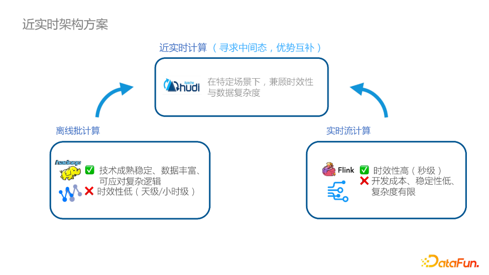
我们探索的近实时架构时，并没有选择业界比较流行的批流一体方案，而是在流式计算和批式计算中间寻求优势互补的中间态。虽然当前业界在计算引擎层面做到了流批一体，但是，在实际的数据生产加工过程中，在数据质量、数据运维、血缘管理、开发套件等方面，实时计算、离线计算客观上存在着较大差异。
因此，我们采取的策略是设计一种近实时的计算架构，在保留离线计算数据的丰富度和复杂度的同时，又兼顾实时计算的时效性高的特点，将两者进行优势互补。这种近实时的方案，能满足刚才提到的分析型、运维型的业务需求。
另一方面，针对数据产品里要求秒级跳变的数据大屏、或者是嵌入到业务流程中的，对数据精准性要求高的事务型处理需求，则不适合近实时架构。
4. 近实时架构方案演进
下面这张图展示的是数仓研发人员较为熟悉的离线和实时数仓的架构：从业务系统中抽取数据，ODS 层到 App 层逐层加工。离线和实时数仓的数据交互主要发生在DIM维表，对于缓慢变化的属性信息，会加工离线的数据，导入到实时的 Redis 或 HBase 存储，然后复用到实时计算中。
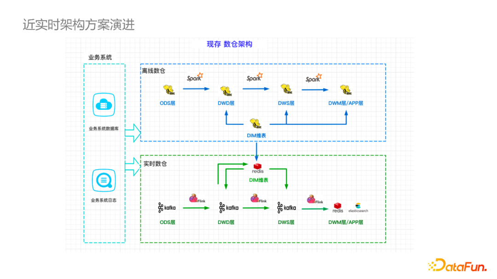
下图是基于Hudi构建的湖仓架构，该架构强调实时、离线数据的复用性（从图中虚线可以看出）。数据湖近实时同步的数据，可以通过增量的方式同步到离线数仓的 ODS 层，提升同步效率。而数据湖中的DWD和DWS层，也可以复用离线数仓中建设的维表，因为本身都是基于HDFS存储，免去了数据同步和加工的成本。此外，对于新型的业务或者是数据源，也可以将数据从业务系统导入湖中，再按照ODS到DMS分层开发。
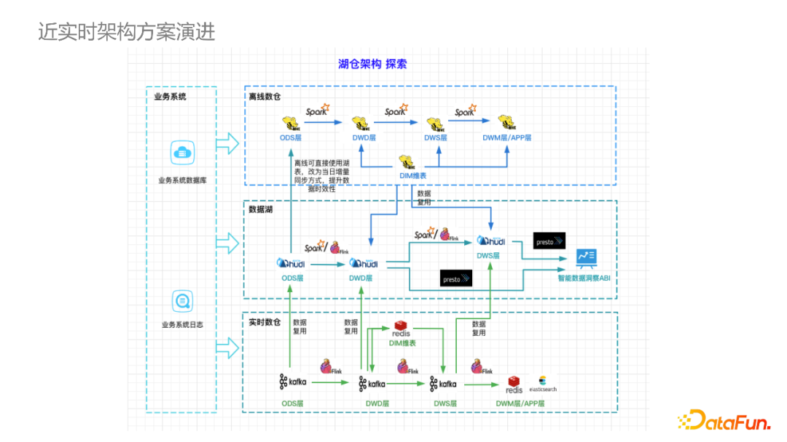
传统离线数仓中的 DWD 层通常不面向应用，这点和基于数据湖的架构是有所区别的。数据湖的思想是 schema-on-read，希望尽量把更多原始的信息开放给用户，不进行过度的加工，从图中大家也可以看到，数据湖中的DWD 层是面向 Presto 查询，提供给用户构建数据看板或分析报表，也可以经过更深度的加工后提供给用户。
03
电商数仓实践
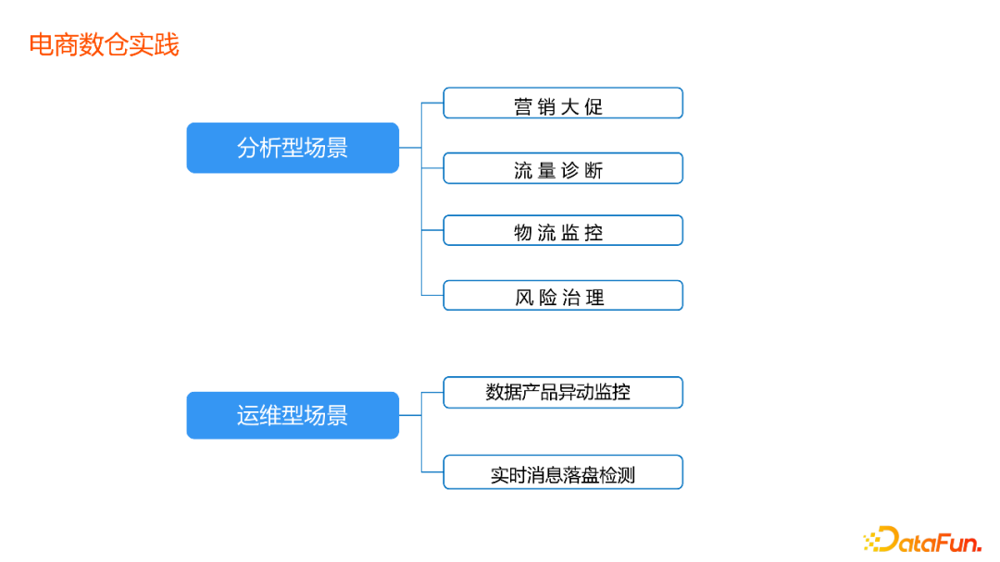
接下来介绍一下抖音电商实时数仓团队在各类业务具体场景的实践案例。
1. 分析型场景实践
（1）营销大促
对于618、双11等购物节日，平台需要提前进行大促招商和资源提报，业务有当日分析和当日决策的需求。营销大促场景的特点是数据本身变更频率不高（小时级），但是需要支持一段周期（5-15天） 至今的累积值统计 。之前的纯离线方案，是每小时对 T – 1的数据进行全量计算，下游使用Presto 分析。这种方案的缺点是数据的时效性差，且往往小时级任务难以保证一小时内产出数据结果。
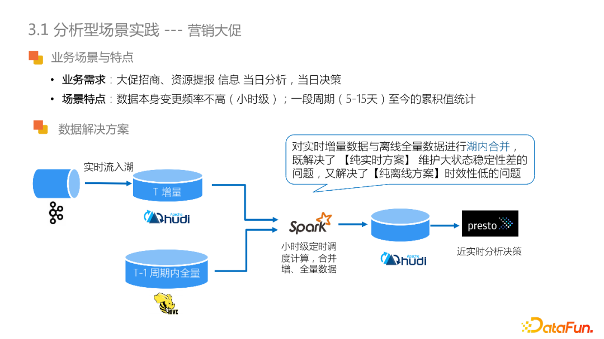
另一种纯实时的方案是将数据源导入到 Flink，由 Flink 进行长周期大状态的计算（15 天的所有信息都维护在作业的状态内）。这种方案的优点是实效性好。但是，任务稳定性难以保障，此外，还需要将数据结导入到实时OLAP数据库中（如clickhouse），存储成本较高。
对于这类场景，近实时架构提出的解决方案是：将实时的数据流入湖，利用 Spark 进行小时级的调度，合并离线 T - 1 周期内的全量数据和T增量数据，将结果存储到数据湖中，通过Presto供实时分析决策使用。通过在湖内合并实时和离线数据，既解决了纯实时方案中大状态稳定性的问题，又解决了纯离线方案时效性低的问题。同时，这种方案充分复用了已有数据，开发和操作成本相对低廉。
（2）流量诊断
流量诊断这类场景是对推荐系统召回的各阶段流量进行实时监控分析，从而为推荐系统提供策略优化建议。同时，也能够改善商家的流量获取、为运营同学排查 case 提效。
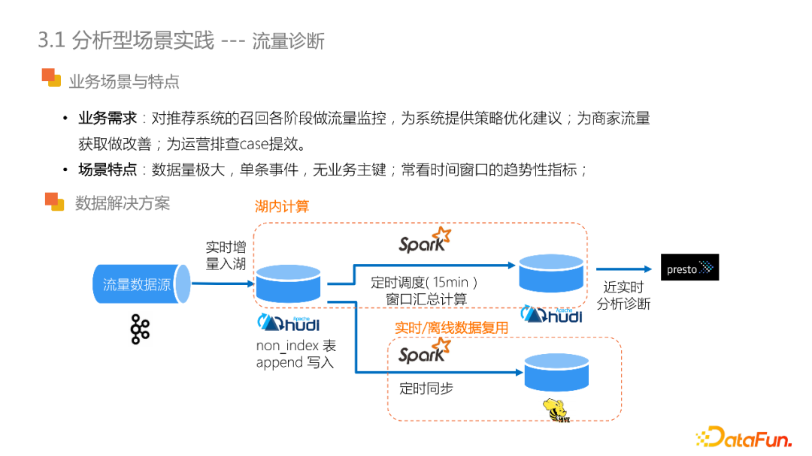
流量数据和其他业务数据相比，本身的数据量级非常大，且属于单条事件型数据，数据没有业务主键。需求上，通常需要观察时间窗口内的趋势性指标。
针对这类场景，数据湖方案就体现出了其处理海量数据的适用性。在解决方案中，是将流量数据增量入湖，以append的方式写入non_index类型的湖表，定时15分钟调度进行窗口汇总计算，通过 Presto 支持近实时分析诊断。对于更复杂的计算或者离线的业务需求，也可以定时同步到Hive表，在满足了近实时分析的同时，也实现了离线的复用。
（3）物流监控
物流监控的业务需求是串联物流链路中的关键性业务节点，比如包裹的发货、揽收、签收，为运营同学提供物流单的全景图，帮助商家实现物流的实时监控。
物流监控场景最大的特点是，物流履约的过程中，涉及的业务系统多，数据源多，且没有统一的业务主键。从另一方面来讲，由于物流本身的业务链路比较长，对于数据的观测的时效性不高，可延缓至分钟级。
对于多业务系统多数据源关联问题，一种传统的实现方式是做多源 join 的操作，但是join 操作需要 Flink 维护大状态，其次是计算复杂度也比较高。为了解决该问题，我们利用字节数据湖多源拼接功能：在业务系统上、下游的两两数据源共用主键情况下，每个数据源各自更新其业务字段到中间结果湖表中，再将多个中间结果表做拼接，从而实现了多业务系统数据源的串联。由此利用了湖表的特性代替了计算中的join操作，简化stateful计算。下图所示的具体例子可供参考。
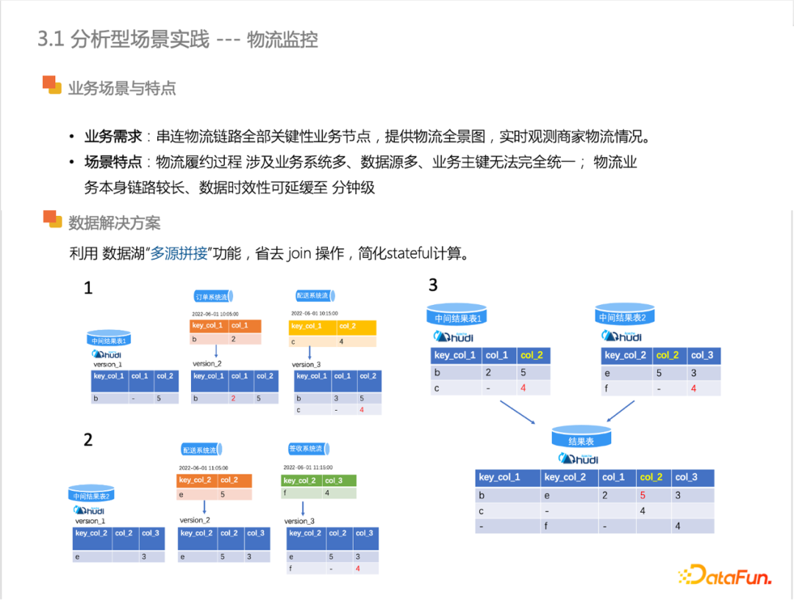
（4） 风险治理
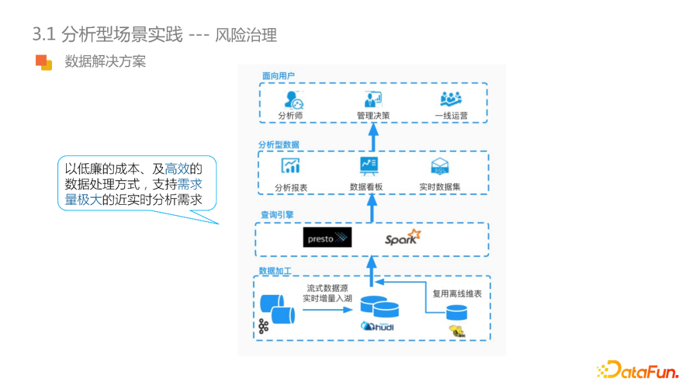
风险治理是电商交易业务中不可或缺的环节。风险治理通过会话、举报、评论、交易等多业务视角去近实时地分析，预判出商家的欺诈行为，或者识别黑灰产业、资金资损的风险事件。这类需求的特点是：对于实时性要求不高（业务变化15 分钟可见），但是需要支持灵活的自主查询，来满足下游报表、看板，数据集等多样的需求。
其次，风险治理需要关联多个数据域，进行整体的风险排查。比如推断疑似黑灰产商家，需要查验资质信息、举报信息或者交易的信息。在分析的过程中，需要关联很多离线维表来获取商家的资质、等级、评分等信息，再做最终的预判。这类需求特点和近实时分析所支持的场景是相吻合的。因此，可采用基于数据湖的解决方案，利用数据湖的海量低加工的数据处理特性，将多数据源实时增量入库，避免过多的 join 或者是汇总计算，同时又把离线的表去做复用。整体直接面向查询引擎，由用户去决定在查询分析时候的 schema ，也就是转化为 schema on read 的模式。
2. 运维型场景实践
该类场景面向的用户主要是：数据研发人员、数据运维人员。
（1）数据产品异动监控
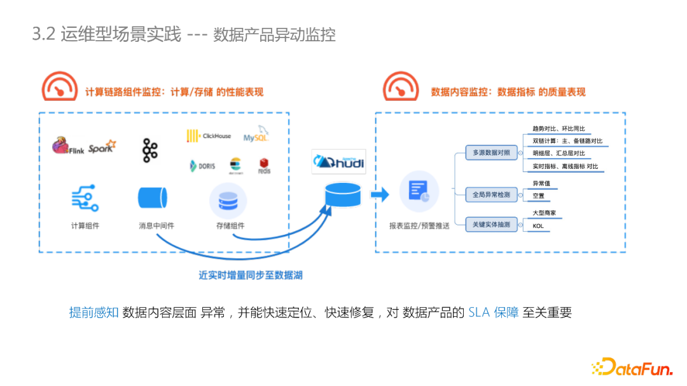
指标异动监控是数据生产中非常重要的环节，通过在数据内容层面提前感知问题，有助于问题的快速定位和解决，保障数据产出的SLA。在实践中，如果仅仅监控计算组件：比如监控 Flink、Spark 等组件metrics 、Kafka 的lag、数据库性能，并不能有效的保障数据产品的SLA。对于实时计算链路来说，由于兜底逻辑，或者源数据脏数据等原因，即使计算链路上的组件没有问题，最后呈现给用户的指标仍有可能不符合预期。为了更好的查询和分析中间结果，需要将消息队列和存储组件中的的数据落盘，以往的方式是：离线小时表的形式同步到Hive中，又或者是落盘到成本较高的OLAP数据库中。但是当前，可以通过将中间结果近实时增量同步至数据湖，在湖中支持多种类型的分析监控，比如说多数据源对照，全局异常检测，大型商家或关键 KOL达人的实体抽测等等。从而实现了操作简便、成本低廉的对数据内容的运维。
（2）实时消息落盘检测
下图是大家比较熟悉的实时数据链路，和离线链路最大的不同之处在于中间的计算结果都是基于消息队列存储，不支持数据的全局观测和整体数据校验。
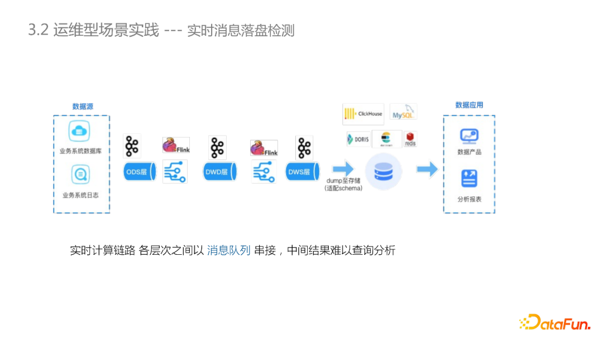
通过CDC将消息队列里的数据落盘到数据湖中，实现中间数据的全面可见、可测，对于提高数据研发同学的效率和数据质量有很大帮助。
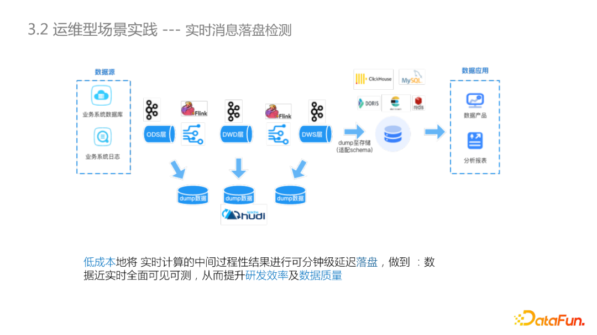
04
未来挑战与规划
随着在抖音电商场景的落地，数据湖技术在近实时场景支持业务的可行性得到了验证。最后从数据研发的角度，讲一下数据湖未来的挑战和规划。
为了今后接入更多、更大数据量的业务，对数据湖性能提出了更高的要求。对于实时数仓来说，主要是数据可见性提升和数据查询RT的提升。
和 Flink、Spark 更深度集成，例如在 failover 阶段提供更强的稳定性保障。
在良好的读写性能、稳定性保障的基础上，由近实时分析型应用转向近实时产品型应用。
今天的分享就到这里，谢谢大家。